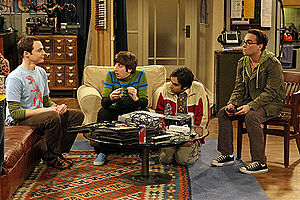
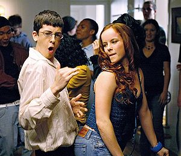

Nerd
 De: La Frikipedia, la enciclopedia extremadamente seria.
De: La Frikipedia, la enciclopedia extremadamente seria.
| De la serie tribus urbanas del mundo:
|
| Nerd
|
Ejemplo de la tribu
|
| Nerd clásico
|
|
| Hábitat
|
Universidades, bibliotecas
y sus habitaciones.
|
| Inteligencia
|
150000 de coheficiente.
|
| Frase favorita
|
La raiz cuadrada del cubo de pi
tiende al infinito
|
| ¿Peligroso?
|
Lleva calculadora, y sabe como usarla
|
| Obsesión
|
Las ciencias
|
| Notas
|
Si, por favor
|
Nerd de Nerdo o Lerdo, Noño, matado, cerebrito, cerebrin.
Dícese de aquél ser humano que se la vive estudiando y ampliando sus conocimientos académicos. Sin vida social, su hábitat son las bibliotecas locales ó escolares, es raro ver a un Nerd solitario, generalmente van en manada para intentar ahuyentar a sus depredadores naturales: los abusones; rara vez lo logran.
Aspecto externo
Los Nerds se pueden reconocer fácilmente. Algunas de las características son:
- Se refugian en anime (les gusta el anime)
- Siempre andan bien fajados.
- Traen el pantalón a la altura del ombligo.
- Son feos
- La mayoría traen anteojos (generalmente reparados con cinta adhesiva, gracias a que los abusones no le tienen consideración a nerds con anteojos) debido a que sufre de miopía y de astigmatismo.
- Extremadamente delgados (los abusones toman prestado por tiempo indefinido sus almuerzos o dinero).
- O, en oposición al punto anterior, cómicamente gordos
- Evitan la interacción persona a persona siendo muy tímidos y callados.
- Cargan libros de cálculo, física cuántica, y materias complicadas.
- Su aparición es espontánea, ya que no se reproducen (huyen de nerviosismo al ver a un miembro del sexo femenino)
- Peinado hacia atrás con enormes cantidades de gel como la que usa Ricardo Fort.
- Hablan solos y hacen ruidos extraños .
- Son parecidos a IP anónima.
Orígenes
Otra caricatura, está más sensi, sí
IP anónima, se ha fijado en tí
Los orígenes son desconocidos, pero se cree que los primeros nerds fueros producto de científicos del área 51 que intentaban crear una enciclopedia viviente. Lo lograron,pero el ser que crearon para almacenar todos los conocimientos de la humanidad era... demasiado asustadizo. El nerd, al estar rodeado de ojos expentantes de los agentes del gobierno se negó a moverse al estar paralizado por el miedo. Los científicos, al ver su fallo, y ver los fondos que el gobierno les destinaba drásticamente reducidos, expulsaron al nerd del laboratorio hacia un mundo cruel que no comprendia las habilidades enciclopédicas de los nerds. El nerd como pudo encontró una familia huésped, y acudió al primer centro de información que estaba a su alcance: la biblioteca más cercana. Siguiendo lo que dictaban sus genes enciclopédicos desde entonces se ha dedicado a recopilar información incansablemente, sin nada mejor que hacer. Los nerds influyen en aquéllos de mentes extremadamente débiles y los hacen caer presa del Nerdismo, transformándolos en otro de su clan.
Notas frikis sobre Nerds
- Solo un friki sabe la diferencia real entre los tres estados de la trilogía FriNerGic.
- De algún modo, un friki es al espacio lo que un geek es al tiempo y un nerd es a la energía.
- Es completamente imposible que no hayas comprendido esta frase.
- La frikiparanoia me impide xenodermizar mis impulsos racionales.
- Un friki escribe aqui lo que un nerd no puede.
- Un nerd se la pasa todo el dia en la biblioteca y posiblemente en la computadora, un friki en la computadora y con otros amigos.
- Un friki es superior al nerd en ignorancia (claro está).
- Nunca, jamás, bajo ninguna circunstancia, debe dejarse a un nerd cerca de algo que emita sonidos musicales, puesto que podría ocurrir algo como esto.
Ventajas de un nerd (algo bueno tenían que tener...)
En este mundo donde hay infinitas opciones para escoger pareja, ¿las chicas prefieren a un chavo con una sonrisa del millón de dólares, o con el tipo que está en su computadora tecleando sin parar? A continuación, una explicación de porque las chavas deberían interesarse en conocer a los nerds, y no perder su tiempo con los ligadores.
 Otra fieshta de nerds, pero que salen en la TV
Los nerds, unos chicos mú mú mú
sensis...
Nerd que vive cerca de Cuerporación Termostática
 Éste nerd si que sabe lo que quiere...
- Aunque los nerds somos un poco torpes, casi todos tenemos buenas intenciones. Los chavos bien "galanes", ¿saben lo que realmente buscan de las chicas? Les van a dar juego nada más. Si un nerd promete que le llamará a una chica a tal hora, sin duda lo hará.
- Nosotros podemos ser de gran utilidad. En un mundo cada vez mas inundado de tecnología y "aparatitos", es genial poder contar con alguien que te explique como usar tu computadora, tu iPod, tu celular o cualquier otra cosa que lleve pilas, baterías o se conecte a la pared.
- Nosotros somos mas románticos de lo que la gente piensa. Es cierto que nuestra idea de romanticismo es: poner en un teclado de computadora un mensaje, una página en Internet, donde te escribe todas las razones por las que ama a la chica, con un montón de enlaces a fotografías suyas, y miles de gifs animados de corazones y rosas, además de poemas y cosas así... pero bueno. ¡Al menos la página durará mas que las flores! y encima ¡se la pueden enseñar a sus amigas!
- Debido a nuestras pocas habilidades para encontrar pareja hay muchísimos donde elegir ¿Que le gustan altos y correosos? Hay cientos de nerds así. ¿Que los prefieren pequeñitos. y abrazables? No hay problema. Pueden elegir el modelo que mejor se adapte a tus necesidades.
- Nosotros tenemos cerebro. Bueno, si lo digo así parece algo malo... pero si lo tenemos es porque de algo sirve... Es cuestión de investigar.
- La mayoría de nosotros somos buenos recordando fechas (cumpleaños, aniversarios, etc). Sobretodo si saben que esos detalles la hacen feliz. Debido a nuestra poca habilidad para relacionarse, nosotros solemos ser más atentos que esos otros tipos con "más opciones". Encima, como tenemos tanto tiempo esperando tener novia, seguro que tenemos listas con cientos de cosas para hacerlas feliz.
- Somos buenos en cosas que para otros son complejas, como las matemáticas.
- Nuestro mantenimiento es barato. Nos conformamos con tortas, tacos, gorditas y cosas así. No requerimos comidas muy elaboradas, por lo que no necesitan saber cocinar, bastara con saber el número de pizza hut (en mi caso con tener un puesto de garnachas cerca).
- No se tienen que preocupar de donde estamos, ni de que alguna "lagartona" esté intentando bajarte el novio. Nosotros nunca nos iremos a un antro a ligar mientras duermes. Cuanto mucho iremos a plaza de computación (como le digo yo "NerdShopping"). Ni siquiera nos fijamos en las demás chicas.
- Tú: "Mira esa chica, es muy bonita!! Parece una modelo, y mira como va vestida..." | Nerd: "Seh..." | Tú: "Mirala! ¿Ya viste que está mirando el aparador de Steren? | Nerd: "¿El qué? ¿La pantalla de plasma?" | Tú: "Olvídalo"
- Aunque no nos gusta salir demasiado, pueden hacer tratos con nosotros. Por ejemplo, le ofrecen ir con él a plaza de la computación a cambio de que la lleve a un concierto. Puede ser que al final tengas que ir sola, pero no tienes de que preocuparte. Cuando lo veas en su casa, estará dormido, con la cabeza recostada en el teclado, y la pantalla con miles de letras. Tranquila. Estamos acostumbrado a dormir así. Simplemente apaga la luz y tápalo con una cobija.
- Nuestros amigos no son unos patanes. Al verla ellos simplemente dirán "¡Una mujer! ¿será real?", en lugar de oír barbaridades como "¡Estamos haciendo fila eeeeh!, después de él voy yo". Ellos son torpes nerds también, por lo que la mayoría la tratarán con respeto, incluso con temor. Si uno de nuestra especie tiene novia (¡si ... nosotros también podríamos llegar a tener!) tiene que dar buena impresión. Lleva a tus amigas para que vayan a jugar a las máquinas.
- Nosotros casi nunca somos celosos, confiamos en ellas, por lo que podrás hacer lo que quieras. Además no nos fijamos. ¿Les gusta andar todas pandrosas en sus casas? No importa, nosotros también somos así. Nosotros ni nos damos cuenta si llevas maquillaje o no, o si te estuviste peinando por horas o en minutos. Siempre te veremos perfecta. Y si engordan un poquito no las haremos sentir mal.
- Nosotros solemos ser personas muy preparadas. No pasaremos todo el día hablándote de tonterías de su coche que no te interesan. Solemos tener un montón de temas interesantes de los que hablar. Política, acontecimientos mundiales, el precio de las hamburguesas de McDonalds... cosas así.
- Nunca tendrán que escuchar "¿Como te va mi reinita? ¡Ya llegó su rey de chocolate!". Nosotros hablamos con propiedad y correctamente. También les alegrará comprobar que somos ordenados y limpios. Entendemos la diferencia entre "dentro" del inodoro y "fuera", es decir el suelo. Y lo mejor de todo es que cuando lleguen a su casa no lo encontrán a él y sus amigotes tirados en el suelo junto a varios six de cerveza... cuando mucho junto a revistas de tecnología (bueno en mi caso sí es bastante probable, pero generalmente no).
- Y el último motivo por el que los nerds somos magníficos: Nosotros las queremos de verdad. No estamos con ellas por su aspecto (aunque es un plus), ni nos importa que sean delgadas, ni les exigiremos que usen kilos de maquillaje y super arregladas... nosotros las queremos por como son realmente. Ese sentimiento es mas duradero que el ¿Qué comen los pajaritos...? Créanme yo no miento...
¿Sabías que...
| Tribus Urbanas
|
 Universales Universales
 Españolas Españolas
 Argentinas Argentinas
 Chilenas Chilenas
 Colombianas Colombianas
 Mexicanas Mexicanas
 Peruanas Peruanas
 Venezolanas Venezolanas
|
Autor(es):
- Krusher
- Nexo
- Fordus
- Haakjvork
- Gmen
- Aque
- Epikurolibre
- Roms
- Niko
- Khazike Khashondo
Frikipedia 2005-2016, Licencia
GFDL 1.2 - Extraído por FrikiLeaks